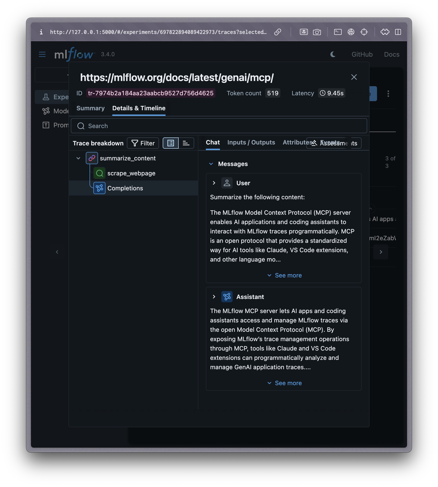
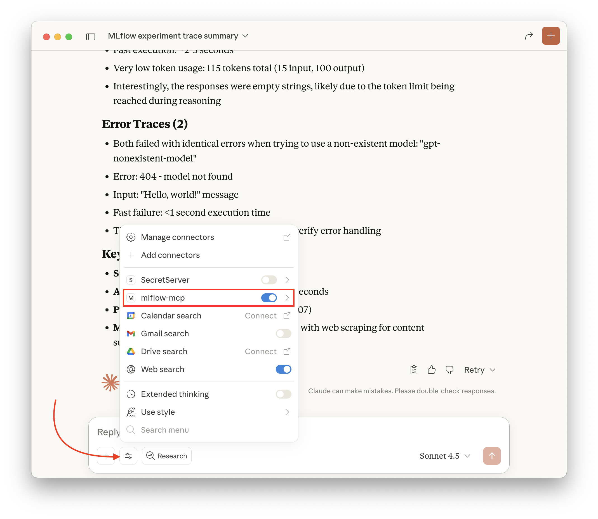
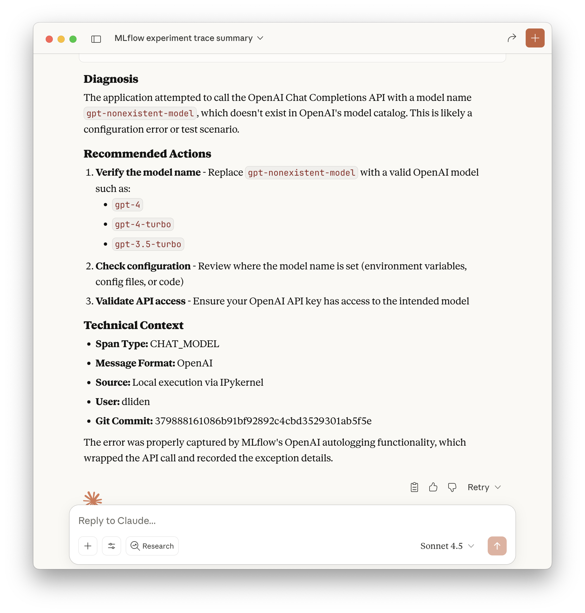
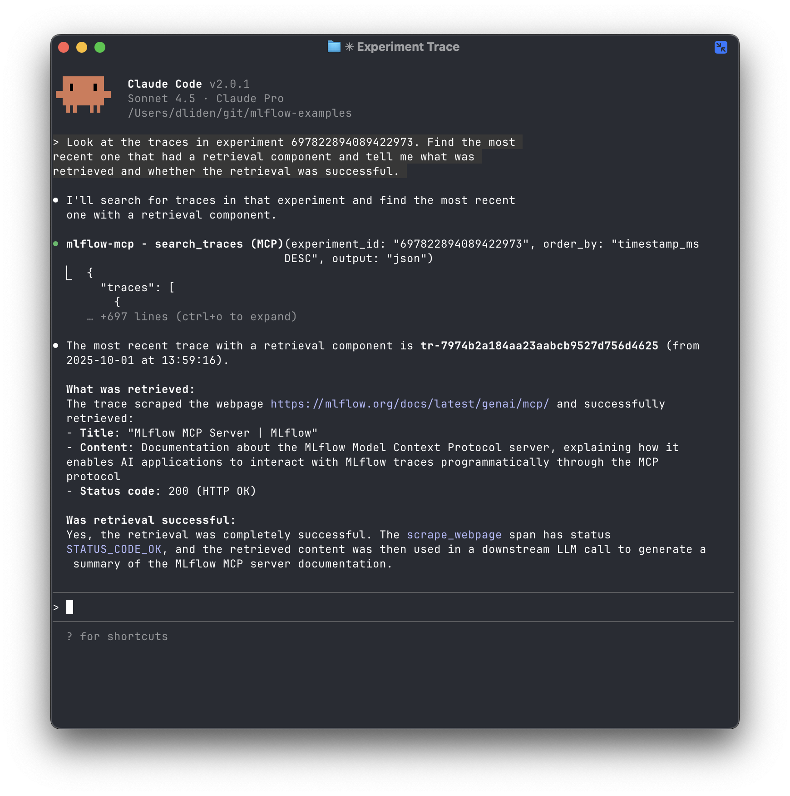

Using MLflow's MCP Server for Conversational Trace Analysis
MLflow 3.4 introduced an official MCP server that lets AI assistants like Claude interact directly with your MLflow traces. This post explores how to set it up when MLflow is installed in a virtual environment, and demonstrates practical usage with both Claude Desktop and Claude Code for debugging and analyzing GenAI application traces.
Introduction: MCP Server for MLflow Traces
MLflow tracing is a powerful AI observability tool that enables you to capture all of the inputs, outputs, and metadata associated with every step of an AI model or Agent execution chain. It works with many different providers, such as OpenAI, Anthropic, LangChain, and LlamaIndex via a single line of code. Tracing provides granular insight into the entire execution chain of AI applications, including tool calls, retrievals, AI responses, any anything else you might want to include.

But capturing the traces is just the first step: once we have all of the trace data, we need to use it to make our AI applications better. In addition to its existing sophisticated evaluation functionality, which enables us to add human, AI, and programmatic assessments to traces, MLflow 3.4 introduced an MLflow MCP server to give AI applications like Claude Desktop and code assistants like Cursor the ability to interact with traces.
If you're just learning about MCP servers for the first time, take a look at my Getting Started with Model Context Protocol posts: part 1, part 2.
The MCP server lets these tools search and analyze trace data, log feedback, manage metadata, and delete traces and assessments.
In the remainder of this post, we will see how to configure and use the MCP server.
MLflow Tracing Setup
Setting up MLflow
In this example, we will install MLflow with the uv package manager. We will install it locally, in a virtual environment, and then use the MCP server to search and analyze traces saved to our local MLflow server.
First, create a new directory for this example and install MLflow. We will also install a few additional project dependencies.
Currently, the MLflow MCP server does not work correctly with click version 8.3.0, so we need to manually specify a different version to use. This is a known issue and will be resolved in a future MLflow release.
We will be querying OpenAI models to create some example trace data, so we need to make sure the OpenAI client can access our OpenAI API key. To do so, create a file called .env with the following:
#.env
OPENAI_API_KEY=<your_openai_key>
Now you can start the MLflow tracking server and access the UI, where we will view our traces, with mlflow ui. You can learn more about configuring the MLflow tracking server here.
Generating some Trace Data to Explore
If you already have trace data you want to explore, you can skip this section!
In order to demonstrate how the MLflow MCP server lets AI tools work with trace data, we first need to create some trace data. We will create three different example traces: one where a simple query to an OpenAI model fails, one where it succeeds, and one that includes an additional step: retrieving text from a web page.
First, let's import our dependencies and handle a few other setup steps:
import mlflow
from openai import OpenAI
import requests
from bs4 import BeautifulSoup
import os
from dotenv import load_dotenv
# Load environment variables
load_dotenv()
# Set up an MLflow experiment
experiment_name="mcp-server-demo"
mlflow.set_experiment(experiment_name)
# Enable OpenAI autologging to capture traces
mlflow.openai.autolog()
# Initialize OpenAI client
client= OpenAI(api_key=os.getenv("OPENAI_API_KEY"))
Running the code block above will create a new MLflow experiment called mcp-server-demo where our traces will be logged. It also loads the OpenAI API key from the .env file we created earlier and sets up the OpenAI client. We're now ready to query OpenAI models and log some traces!
Example trace 1: Failed API Call
MLflow tracing captures detailed error information that can be very useful for debugging AI application failures. Here, we'll attempt to call an OpenAI model that does not exist, resulting in an error:
response= client.chat.completions.create(
model="gpt-nonexistent-model", # Invalid model name
messages=[{"role": "user", "content": "Hello, world!"}],
max_tokens=50
)
Example trace 2: Simple successful API call
Our second example will similarly be a single call to an OpenAI model—this time, to a model that actually exists.
response= client.chat.completions.create(
model="gpt-5",
messages=[{"role": "user", "content": "Explain what MLflow is in one sentence."}]
)
Example trace 3: multi-step retrieval process
Our third example is more substantial. We will create a small script defining a workflow that extracts the text from a webpage and passes it to GPT-5 for summarization. We use the @mlflow.trace() decorator to manually trace the webpage scraping function, and we wrap the whole process in a parent span so the traces for both the web scraping and the OpenAI completion are captured under one parent span.
@mlflow.trace(name="scrape_webpage", span_type="RETRIEVER")
defscrape_webpage(url: str) ->dict:
"""Scrape content from a webpage - creates a nested span."""response= requests.get(url, timeout=10)
response.raise_for_status()
soup= BeautifulSoup(response.content, 'html.parser')
# Extract title and paragraphs
title= soup.find('title')
title_text= title.get_text().strip() if title else"No title found"paragraphs= soup.find_all('p')
content=' '.join([p.get_text().strip() for p in paragraphs[:5]]) # First 5 paragraphs
return {
"title": title_text,
"content": content[:1000], # Limit content length
"url": url,
"status_code": response.status_code
}
defsummarize_content(content: str) ->str:
"""Summarize content using OpenAI - creates nested span within main trace."""prompt= f"Summarize the following content:\n\n{content}"# This OpenAI call will be automatically traced due to autologging
response= client.chat.completions.create(
model="gpt-5",
messages=[{"role": "user", "content": prompt}],
)
return response.choices[0].message.content
defmulti_step_retrieval_process(url: str) ->dict:
"""Complete retrieval and summarization pipeline with nested spans."""with mlflow.start_span(name="summarize_content", span_type="CHAIN") as parent_span:
parent_span.set_inputs(url)
scraped_data= scrape_webpage(url)
summary= summarize_content(scraped_data["content"])
parent_span.set_outputs(summary)
return {
"url": url,
"title": scraped_data["title"],
"content_length": len(scraped_data["content"]),
"summary": summary
}
Now let's invoke this retrieval and summarization workflow:
url="https://mlflow.org/docs/latest/genai/mcp/"result= multi_step_retrieval_process(url)
# Print experiment ID for use with Claude
experiment= mlflow.get_experiment_by_name(experiment_name)
print(f"\nSuccessfully generated traces in experiment: {experiment.name}")
print(f"Use this Experiment ID with Claude: {experiment.experiment_id}")
Save all the Python code from this section into a file (e.g., generate_traces.py) and run it with uv run python generate_traces.py, or run the code cells in a Jupyter notebook. The script will print your experiment ID, which you'll need for the Claude examples below.
Using the MLflow MCP Server
Now that we have set up MLflow and generated some sample traces, let's explore them with the help of AI models! We will show how to do this with with Claude Desktop and Claude Code.
Claude Desktop
You can connect the MLflow MCP server with Claude Desktop as follows:
If the MCP server fails to connect, you may need to use the full path to the uv executable instead of just "uv" for the command value. The conditions when this is necessary vary by system configuration. To find the full path, run which uv in your terminal (e.g., /Users/username/.cargo/bin/uv).
There are a few things here worth calling out, including some key differences from the configuration in the official docs:
Because we installed MLflow in a virtual environment with uv, we need to make sure to call the MLflow MCP server using the correct MLflow installation. We use the --directory flag to specify that uv should run the mlflow executable installed to the virtual environment in our project directory. If you have MLflow installed globally, you can refer to the configuration in the official docs instead.
If your MLflow tracking URI is running on a non-default host/port, you will need to change the MLFLOW_TRACKING_URI value.
Restart Claude Desktop. After restarting, you should see that mlflow-mcp appears in the Claude Desktop connections menu:

Try it out!
Let's ask Claude to identify and diagnose traces with errors.
When asking Claude to work with traces, you will need to specify your experiment ID. Claude cannot infer the experiment ID. If you ran the trace generation code above, the experiment ID was printed to the console. You can also find it in the MLflow UI by navigating to the experiments tab, clicking the experiment to which you logged your traces, and then clicking the information icon (an i in a circle) next to the experiment name. Alternatively, you can add an MLFLOW_EXPERIMENT_ID environment variable to the MCP server configuration to specify a default experiment.
I asked the following:
Please analyze and diagnose the most recent trace that resulted in an error in experiment 697822894089422973.
Claude called the Search traces and get trace functions to identify the relevant trace, and then responded with a diagnosis of the issue and suggested next steps:

Claude Code
Configuring the MLflow MCP server to work with Claude Code is almost identical to configuring it for Claude Desktop. We just need to add the JSON configuration to a different file (.mcp.json in your project root directory). You can follow these steps to get started:
Copy the configuration JSON snippet from the prior section into .mcp.json in your project's root directory, creating the file if necessary.
This is one of several different ways to add MCP servers to Claude Code. See the Claude Code docs for more options.
Run Claude Code by calling claude from your project's root directory.
Try it out! Let's ask Claude to find the trace with a retrieval step and assess whether it worked.
Look at the traces in experiment 697822894089422973. Find the most recent one that had a retrieval component and tell me what was retrieved and whether the retrieval was successful.

Claude code was able to identify the relevant trace and answer the question using the tools available through the MCP server.
Next Steps and Observations
There's something satisfying about using AI to debug AI. The MLflow MCP server closes the loop between capturing traces and actually using them: your AI assistant can now help you understand why your other AI assistant failed.
The MLflow docs suggest some use cases, but the real value comes from exploring your own patterns:
Ask Claude to compare successful vs. failed traces to identify common failure modes
Have it search for traces with specific token usage patterns when you're trying to optimize costs
Use it to find traces where retrieval returned irrelevant content, then iterate on your chunking strategy
Let it spot when certain model configurations consistently produce better results
Give Claude Code access to both your agent code and its traces so it can review failures, suggest fixes, and help you iterate without leaving your editor
The setup takes five minutes, but once configured, your trace data becomes something you can have a conversation with instead of handcrafting search queries or digging through the UI.